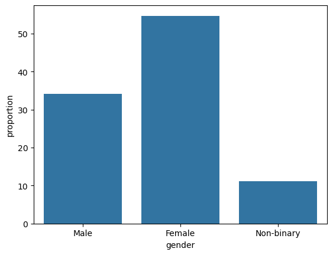
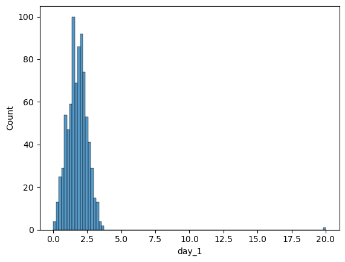
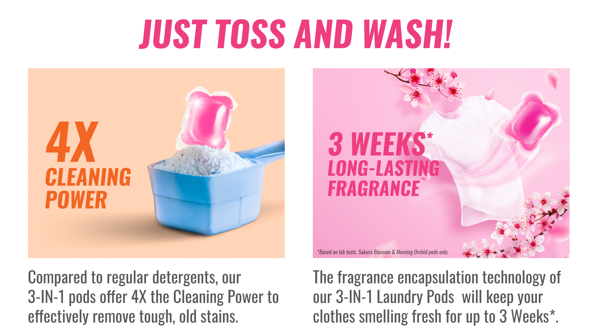
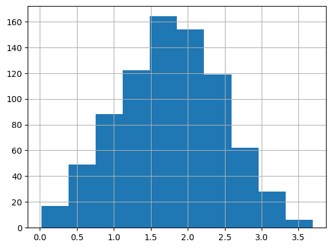

from unittest.mock import inplace
import pandas as pd
import seaborn as sns
import matplotlib.pyplot as plt
import pyreadstatAssignment: Laboratory 1
Context of this dataset
A biologist was worried about the potential health effects of music festivals. So, one year she went to the Download Music Festival (http://www.downloadfestival.co.uk) and measured the hygiene of 810 concert goers over the three days of the festival. In theory each person was measured on each day but because it was difficult to track people down, there were some missing data on days 2 and 3. Hygiene was measured using a technique that results in a score ranging between 0 (you smell like a rotting corpse) and 5 (you smell like sweet roses). Sanitation is not always great at these places, so this researcher predicted that personal hygiene would go down dramatically over the three days of the festival. The data file is called download.sav.
Note
For this work, I used python=3.10.14 and pandas=2.2.2 as my primary tools, which align with my daily workflow. If you prefer a more modern experience (especially when reviewing the code), I’ve also rendered the output as an interactive HTML version, which you can access here. The jupyter notebook of this assignment can be found here.
Questions and Objectives
- What do 1, 2, and 3 mean in variable “gender”? What are their percentages in the sample?
- Draw a barplot of “gender” whose 𝑦-axis represents the percentage of each group.
- Draw a histogram of “day_1”. Is there anything wrong with this variable?
- How many cases have missing values for “day_2”?
- (Extra credit) Exclude the outlier. In SPSS, you can follow the procedure below.
- ⟨ Data ⟩ ⟶ ⟨ Select Cases ⟩
- Select “If condition is satisfied” in ⟨ Select ⟩
- ⟨ If ⟩
- Double-click on the variable corresponding to “day_1” in the variable list
- ⟨ <= ⟩ ⟶ ⟨ 5 ⟩ ⟶ ⟨ Continue ⟩ ⟶ ⟨ OK ⟩
- Draw a histogram of “day_1” again in the same way as before.Preparation
Before working on the lab work , I started with a quick EDA.
df_download, metadata_download = pyreadstat.read_sav("./datasets/download.sav")
# A quick peek on the structure of the DataFrame.
print('0. An overall description of this dataset: \n' + str(df_download.describe()) + '\n')
print('1. Shape - rows and columns: \n' + str(df_download.shape) + '\n')
print('2. Variables (in SPSS) or column names: \n ' + str(df_download.columns) + '\n')
print('3. Missing values (if any): \n ' + str(df_download.isnull().sum()) + '\n')0. An overall description of this dataset:
ticket_no gender day_1 day_2 day_3
count 810.000000 810.000000 810.000000 264.000000 123.000000
mean 3616.212346 1.769136 1.793358 0.960909 0.976504
std 610.241493 0.632679 0.944495 0.720780 0.710277
min 2111.000000 1.000000 0.020000 0.000000 0.020000
25% 3096.250000 1.000000 1.312500 0.410000 0.440000
50% 3620.500000 2.000000 1.790000 0.790000 0.760000
75% 4154.750000 2.000000 2.230000 1.350000 1.525000
max 4765.000000 3.000000 20.020000 3.440000 3.410000
1. Shape - rows and columns:
(810, 5)
2. Variables (in SPSS) or column names:
Index(['ticket_no', 'gender', 'day_1', 'day_2', 'day_3'], dtype='object')
3. Missing values (if any):
ticket_no 0
gender 0
day_1 0
day_2 546
day_3 687
dtype: int64
From the output, it seems something going wrong with the column day_1. I’m sure I’ll check it later. Besides, the column gender should be a categorical variable rather than an int and should be corrected:
df_download['gender'] = df_download['gender'].astype('category')Question 1
Q1a: What do 1, 2, and 3 mean in variable “gender”?
Answer:
| Code | Label |
|---|---|
| 1 | Male |
| 2 | Female |
| 3 | Non-Binary |
Solution:
I reached the mapping for categorical variables by accessing metadata from the given sav file by pyreadstats:
print(metadata_download.variable_value_labels){'gender': {1.0: 'Male', 2.0: 'Female', 3.0: 'Non-binary'}}P.S. On another note, considering this is data from a music festival, should I assume that apart from the 90 individuals labeled themselves as ENBY, the terms “Female” and “Male” in the dataset include both cisgender and transgender individuals?
Q1b: What are their percentages in the sample?
Answer:
| Gender | Count | Percentage |
|---|---|---|
| Female | 443 | 54.69% |
| Male | 277 | 34.20% |
| Non-Binary | 90 | 11.11% |
Solution:
# Calculating the Percentage
percentage = df_download['gender'].value_counts(normalize=True) * 100 # For percentage
print(percentage)gender
2.0 54.691358
1.0 34.197531
3.0 11.111111
Name: proportion, dtype: float64Report the result (in a formal way)
And the results of Question 1a and 1b should be reported in a formal way:
The total \(N\) for ths dataset (for the study) was 810. The sample included the following gender groups: 54.69% male, 34.20% female and 11.11% of non-binary.
Question 2
Draw a barplot of “gender” whose 𝑦-axis represents the percentage of each group.
Answer:
See Figure 1
Solution:
gender_barplot = sns.barplot(percentage)
gender_barplot.set_xticklabels(['Male', 'Female', 'Non-binary'])
plt.show()C:\Users\Riko\AppData\Local\Temp\ipykernel_15292\2800231647.py:4: UserWarning: set_ticklabels() should only be used with a fixed number of ticks, i.e. after set_ticks() or using a FixedLocator.
gender_barplot.set_xticklabels(['Male', 'Female', 'Non-binary'])

Question 3
Draw a histogram of
day_1. Is there anything wrong with this variable?
Answer:
See Figure 2.
Solution:
From the EDA and the histogram shown below (see Figure 2), we can clearly identify an outlier with a “hygiene score” significantly higher than the others. Given that the score should range between 0 and 5, this could probability be a typo or some other thing we may have overlooked.
day1_hist = sns.histplot(df_download['day_1'])
plt.show()

# Filter out the outlier
print(df_download[df_download['day_1'] > 5.0]) ticket_no gender day_1 day_2 day_3
610 4158.0 2.0 20.02 2.44 NaNI filtered out this outlier, it’s in row number 610, and it turns out that based on the ranking, this lady was four times cleaner than the cleanest person at the music festival. Hmm… 4x cleaner? Sounds like something you’d read on a box of laundry pods (see Figure 3). Let’s call her Ms. Laundry Pod.

I’m just saying this for fun (except the Ms. Laundry Pod part). The hygiene score is an interval variable that we can’t simply multiply or divide the values like what I did.
Question 4
How many cases have missing values for
day_2?
Answer:
546 cases have missing values in the column day_2.
Solution:
print(df_download.isnull().sum()['day_2'])546Question 5
Excluding the outlier in day 1.
Solution:
Thankfully, there’s only one outlier - Ms. Laundry Pod, located at row number 610. So, for this part, I’ll simply exclude that row and save the remaining data to a new DataFrame.
df_download_dropped_outlier = df_download.drop(610)
# Or I could just enter the danger zone by dropping data on the DataFrame by:
# df_download.drop(610, inplace=True)Also, I did a double check by plotting the data once more (see Figure 4).
# Confirm if I'm in the right track.
df_download_dropped_outlier['day_1'].hist()

[EOF]